AI Academy · Level 1 · Grade 6 · Week 23 · Student lesson
Fair for Whom?
Learn to understand, design, build, test and explain AI systems responsibly.
Project: Helpful Classroom Sorter
Before you start
Use fractions: 3 successes out of 5 is 3/5, not 3/2.
Plan time to read, investigate and explain. Keep predictions separate from observations.
Student lesson · 1 of 16
Your mission
Your learning target
I can compute a correct-out-of-assessed fraction and explain its denominator.
I can compare systems on shared cases while checking performance within conditions.
I can combine counts correctly and keep missing outcomes separate from assessed errors.
Remember before reading
Close your notes first. A rough first answer helps us choose the right starting point; it is not a score for your ability.
Without opening the old lesson, explain one key idea from Missing and Unbalanced Examples. Give an example and a mistake that the idea helps you avoid.
Without opening the old lesson, explain one key idea from Recommendations. Give an example and a mistake that the idea helps you avoid.
Without opening the old lesson, explain one key idea from Prediction Is Not Fact. Give an example and a mistake that the idea helps you avoid.
After trying, check the relevant lesson or ask your teacher. Change the part of your explanation that the evidence shows was wrong.
Fairness requires checking outcomes for different users and situations.
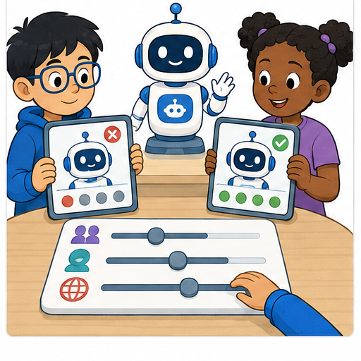
Learner name:
Readiness for the connected explanation
Eight cases were selected, but one has no assessed outcome. How many have assessed outcomes, and what must a performance report say about the remaining case?
This week’s end goal
By the end, I can compare group fractions and combine unequal-sized groups correctly.
Student lesson · 2 of 16
Notice the evidence
PICTURE STORY
Look Closely Before You Explain
Pictures give clues; evidence tells us what the clues mean.

What do you notice?
Name three visible details without explaining them yet.
Circle the detail most connected to the system's decision.
Name one detail that may be decoration or distraction.
Make a first prediction and state the clue that supports it.
My observations, prediction, and evidence:
A closer explanation
For this week, accuracy means the number of correctly labelled cases divided by the number of assessed cases. Every assessed case has a system label and a checked reference label, so its result can be judged correct or incorrect. State the system version, cases and scoring rule with the fraction. Cases without an assessable outcome are reported separately.
Two fixed shape-recognition versions, A and B, label the same 12 previously unseen picture cards. Eight cards are bright and four are dim; each has a checked circle or square reference label. Both versions return labels for all 12. A is correct on 8 bright and 1 dim card. B is correct on 6 bright and 2 dim cards.
A therefore has 9 correct out of 12 assessed, written 9/12. Dividing numerator and denominator by 3 gives 3/4. Three quarters equals 75 out of 100, or 75%. B has 8/12, equal to 2/3. For this comparison keep B as an exact fraction; a rounded percentage is unnecessary.
Student lesson · 3 of 16
See how it works
VISUAL MECHANISM
Input → Process → Output
Follow the information instead of imagining magic inside the machine.
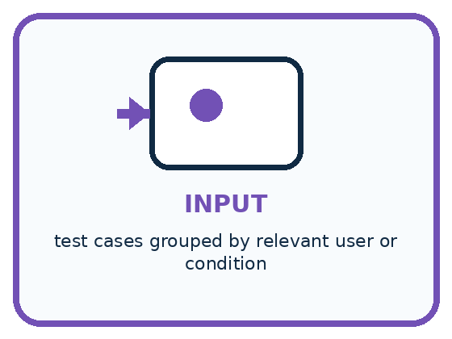
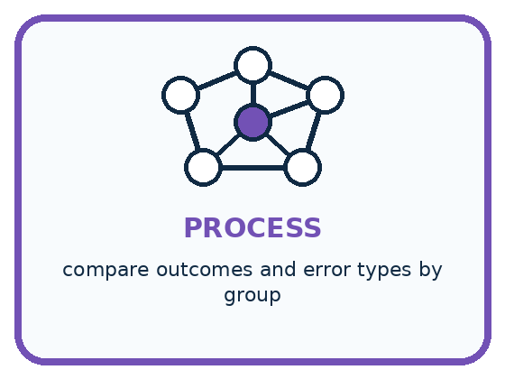
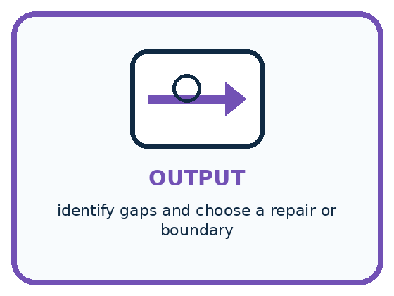
INPUT test cases grouped by relevant user or condition
PROCESS compare outcomes and error types by group
OUTPUT identify gaps and choose a repair or boundary
Draw a fresh example with all three stages:
A closer explanation
Combine correct and assessed counts
With the same denominator 12, compare the numerators: 9 is greater than 8. A is correct on one more of these cards. This establishes the ordering on this test under this scoring rule; it does not prove that A will always outperform B on future cards.
To compare fractions with different denominators, rewrite them as equivalent fractions with a common denominator. For example, 3/4 equals 9/12 and 2/3 equals 8/12. Changing the written denominator does not create new test cases: it only helps compare the proportions.
Connect the picture and the explanation
Point to the input, the deciding step and the result in this week’s visual. Explain the same step in ordinary words. A picture helps when you can say what each part represents.
Student lesson · 4 of 16
Compare the cases
PICTURE GALLERY
Four Cases, Four Clues
Use the visual cue, then read the evidence carefully.
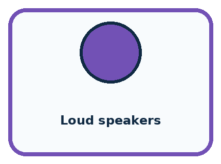
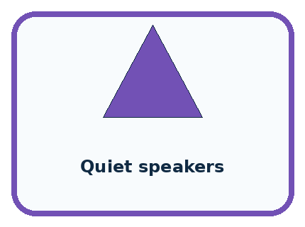
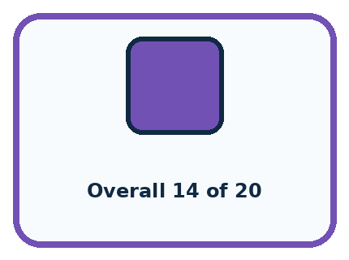
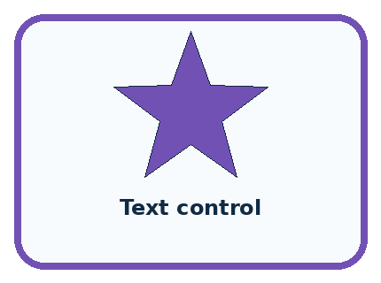
CASE 1 — Loud speakers Clue: 9 of 10 commands work. Meaning: high success.
CASE 2 — Quiet speakers Clue: 5 of 10 commands work. Meaning: performance gap.
CASE 3 — Overall 14 of 20 Clue: 70 percent total. Meaning: hides difference.
CASE 4 — Text control Clue: alternate access path. Meaning: possible remedy.
Which two pictures are easiest to confuse? What evidence separates them?
Change one thing in the pictured case
Change: Give bright and dim groups equal weight as an explicitly different metric.
Prediction: M scores 70%; N scores about 81.7%.
Reason: This averages group rates and is not the original 16-card agreement rate.
Student lesson · 5 of 16
Words that unlock the idea
VOCABULARY
Words You Can See and Use
The badge is a memory cue; the definition does the real thinking work.
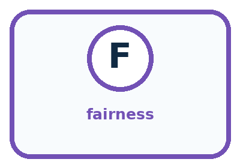
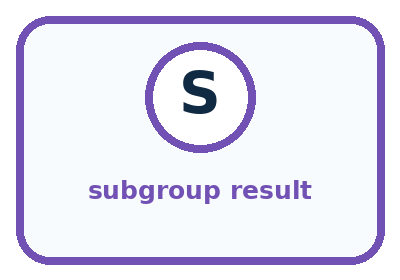
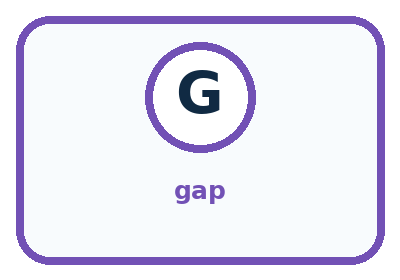
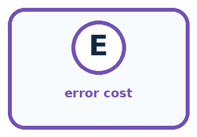
| Word | Meaning | My example |
|---|---|---|
| fairness | reasoned treatment of outcomes across people and situations | |
| subgroup result | performance measured for one relevant group | |
| gap | difference between group outcomes | |
| error cost | harm or burden caused by a mistake |
Misconception detective
CLAIM TO REPAIR Good overall accuracy proves fairness.
Use one vocabulary word and one piece of evidence to repair it:
Words used in the closer explanation
| Word | Meaning |
|---|---|
| Numerator | The count above the fraction line; here, assessed correct cases |
| Denominator | The count below the fraction line; here, all assessed cases |
| Equivalent fractions | Different written fractions that represent the same proportion |
| Accuracy | The fraction of assessed classification cases labelled correctly under a stated rule |
| Aggregate | A result formed by combining the counts of several groups |
Student lesson · 6 of 16
Follow a worked example
WORKED EXAMPLE
Watch the Reasoning, Not Just the Answer
Every step connects a claim to observable evidence.

STEP 1 — OBSERVE test cases grouped by relevant user or condition
STEP 2 — TRACE compare outcomes and error types by group
STEP 3 — CONCLUDE identify gaps and choose a repair or boundary
What new evidence could change this answer?
A closer explanation
| Question | Version A | Version B |
|---|---|---|
| Bright-card accuracy | 8/8 = 1 | 6/8 = 3/4 |
| Dim-card accuracy | 1/4 | 2/4 = 1/2 |
| Combined accuracy | (8 + 1)/(8 + 4) = 9/12 | (6 + 2)/(8 + 4) = 8/12 |
The bright group has twice as many assessed cards as the dim group. Each individual card counts once in the combined result, so add correct counts and assessed counts. Do not simply average the two group percentages and call it the all-card accuracy: that would give each group equal weight despite their different sizes.
If the intended task especially needs dim-card performance, inspect that result and gather suitable additional evidence before choosing. An overall leader can still be weaker in a relevant condition. This table alone also does not tell us whether particular mistakes have different consequences. The scoring rule must match the purpose.
Learn from the worked case
Cover the result before checking it. Say what is given, choose the procedure, and follow one step at a time. Then uncover the result and explain your first mismatch. Ask why a step is allowed, not only what number it produces.
A pictorial worked case: Fair for Whom?
A fictional badge reader is evaluated on bright and dim cards with known reference labels.
The facts we will use
Version M is correct on 9 of 10 bright cards and 3 of 6 dim cards.
Version N uses the same cards: 8 of 10 bright and 5 of 6 dim correct.
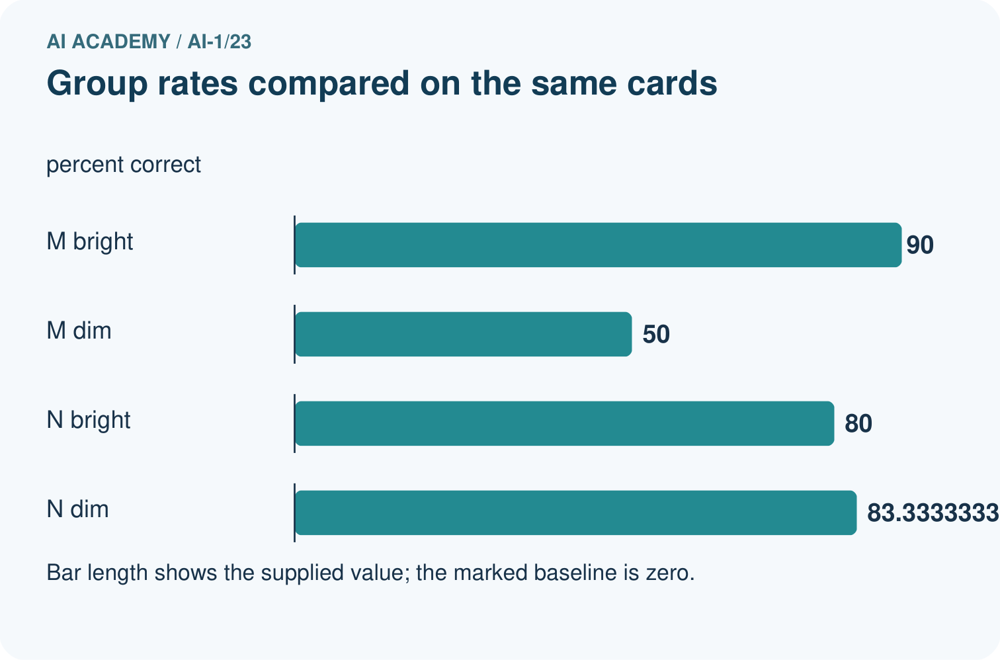
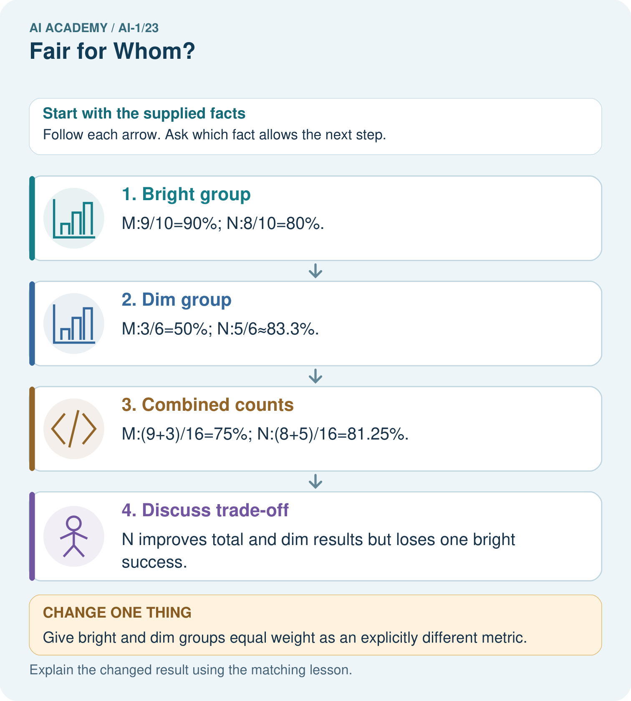
Read the picture one step at a time
Why this result follows
Adding correct counts and denominators weights each tested card once. Averaging 90% and 50% would incorrectly give unequal groups equal size in the all-card rate. The group breakdown reveals a trade-off hidden by the total. Decide what matters with the relevant users rather than announcing that one number proves fairness.
What this example does not establish
Six dim cards supply limited evidence; these descriptive rates do not prove a system is fair for all users.
Read the labelled picture: Which group loses performance under N, and can total improvement erase that fact?
Change one thing: Give bright and dim groups equal weight as an explicitly different metric. Predict the result before checking the explanation. What remains the same?
Student lesson · 7 of 16
Find and repair a mistake
COMPARE
Same Result, Different Reason
A comparison helps reveal the true concept boundary.
| Case | Evidence | What it shows |
|---|---|---|
| Loud speakers | 9 of 10 commands work | high success |
| Quiet speakers | 5 of 10 commands work | performance gap |
| Overall 14 of 20 | 70 percent total | hides difference |
| Text control | alternate access path | possible remedy |
Repair two tempting claims
CLAIM A Good overall accuracy proves fairness.
Repair:
CLAIM B Fairness means every group must have identical data or outcomes in every situation.
Repair:
A closer explanation
A useful performance statement gives the correct count, assessed count, missing count and evaluation conditions. For A: 9/12 correct, no missing outcomes, on the shared test of 8 bright and 4 dim cards. Follow it with the important contrast: 8/8 bright and 1/4 dim. Percentages are optional shorthand, not replacements for these counts.
A score of 3/4 and a score of 75/100 are equal proportions, but they describe different quantities of evidence if they come from different tests. The collection method and case coverage still matter. Neither fraction is an individual prediction confidence or a guarantee about the next case.
Student lesson · 8 of 16
Practise together
GUIDED PRACTICE
Try It, Check It, Explain It
Use support now so you can succeed independently later.

Explain how the picture story demonstrates this idea: Fairness requires checking outcomes for different users and situations.
Use a fresh example to explain fairness.
Trace a new input → process → output example.
Find and repair the error in: Fairness means every group must have identical data or outcomes in every situation.
Invent one edge case and name the safe response.
A closer explanation
A third version C is run on the same 12 cards, but two results are lost before they can be judged. Among its 10 assessed outcomes, 9 are correct and 1 is wrong: 9/10 = 90% assessed accuracy, with 2 outcomes unassessed. Do not call this 90% on all 12. Its assessed subset differs from A and B, so the headline fractions do not give the same complete-case comparison.
Recover and assess the two lost results if possible, without changing the versions. Another clearly labelled comparison can use the exact same cases with known outcomes for every version; disclose which cases it excludes and why. The current totals do not tell us how A performed on C’s ten assessed cases. Never invent that subset score.
Practise with less help: Compare totals and conditions
Use workbook W2 for the connected example “Fractions and performance comparisons”. First fill the input and rule boxes. Try the middle steps before asking for a hint. After a hint, try the next step yourself.
| Plan | Do | Check |
|---|---|---|
| What is given? Which rule or procedure applies? | Record each intermediate step. | Does the result follow? What remains unknown? |
Explain your trace to a partner. Your partner points to one step to check. Swap roles on the next case. Each person writes their own explanation.
Check your reasoning
Use the worked case for Fractions and performance comparisons. Proposed explanation: “Only correct cases belong in the denominator”. Decide whether this explanation is supported. Point to the step or supplied fact that decides; explain your repair if needed.
Answer on your own before discussion. If you are unsure, say which step you need help with.
Explain the picture
Which group loses performance under N, and can total improvement erase that fact?
This is supported practice. Keep the separately named independent case for an attempt before feedback.
Student lesson · 9 of 16
Run the investigation
EXPLORER LAB
Voice Game Fairness Check
Predict first, test honestly, and explain what the evidence means.

State your prediction before the result is known.
Complete the task: Run a voice-game test for quiet and loud speakers.
Keep a normal case and an edge case clearly separated.
Record what happened—even when it does not match your prediction.
Explain the result, one limitation, and the next useful test.
| Case | Prediction | Observed result | What it means |
|---|---|---|---|
| Normal | |||
| Edge |
Plan → try → check
Before trying: what do I expect, and why? While trying: which step could first go wrong? Afterwards: what did I actually observe, and what should change? Keep “not run” if you only traced the procedure.
Student lesson · 10 of 16
Build your understanding
PRACTICE LADDER
Climb from Recall to Defense
Each step asks for a stronger kind of understanding.

RECALL Define fairness.
EXPLAIN Fairness requires checking outcomes for different users and situations.
TRACE Show the input, process, and output.
DIAGNOSE Repair: Good overall accuracy proves fairness.
TRANSFER Apply the idea to a new home or classroom case.
CREATE Design one revealing test.
DEFEND Give a claim, evidence, mechanism, limit, and safe action.
Student lesson · 11 of 16
Connect your project
PROJECT
Helpful Classroom Sorter
Build one coherent system across the year, one evidence-based decision at a time.

What real classroom need does this serve?
What information is necessary—and what should stay private?
What happens inside the process?
What normal and edge cases will you test?
When should it say not sure or ask a person?

My project decision:
Evidence for your project
Report sorter outcomes by relevant conditions and record whose failures matter when choosing a revision.
Student lesson · 12 of 16
Show what you know
MASTERY
Fresh-Case Independent Proof
Complete this after teaching and guided practice have ended.

□ Name or draw the fresh case.
□ Trace input, process, and output.
□ State the conclusion and strongest evidence.
□ Name one limit, failure, missing clue, or fairness/privacy concern.
□ Explain one safe next action or improvement.
Independent evidence:
My level: □ Not yet □ With one hint □ Independently □ I can teach it
Student lesson · 13 of 16
Study a complete case
Week 23 Worked case
Use the supplied details to practise the weekly concept before attempting the independent question. This case extends the illustrated lesson.
The situation
A voice system succeeds on 8/10 quiet and 4/10 noisy recordings.
The question
Compare and propose the next investigation.
Worked explanation
The rates differ. Test more varied recordings under controlled conditions and inspect other factors before claiming a cause.
Explain it in your own words
Which detail supports the answer, and why does it matter?
Trace the supplied case visually
Compare success under two conditions
| Evidence or stage | Value or result |
|---|---|
| Quiet | 8/10 |
| Noisy | 4/10 |
A voice system succeeds on 8/10 quiet and 4/10 noisy recordings.
Compare and propose the next investigation.
The rates differ. Test more varied recordings under controlled conditions and inspect other factors before claiming a cause.
Student lesson · 14 of 16
Try a new case independently
Independent case: Compare a new shared sound test
Versions X and Y label the same 20 previously unseen clips: 12 quiet and 8 noisy, with no missing outcomes. X is correct on 10 quiet and 2 noisy clips; Y on 9 quiet and 5 noisy clips. Calculate each combined fraction and percentage, identify the overall leader and compare the leaders within each group. Explain why an overall result cannot guarantee the next clip’s outcome.
Attempt this case before feedback. Record any help. Earlier examples below are further practice; a case already practised with feedback cannot establish fresh transfer.
Week 23 Independent application
Close the worked explanation. Apply the idea to this different question without copying.
A helper succeeds on 4 of 4 clear voices and 1 of 4 quiet voices. Who is less well served? What evidence should a repair preserve?
My answer, with a trace, calculation or supporting evidence
Create and test
Change one relevant detail. Predict the result before testing. Include a boundary or missing-information case when it helps reveal a limit.
My changed input and expected result
Connect to your project
Test the sorter across relevant item conditions and users; never infer sensitive identity to create a fairness check.
The evidence I will keep
Your teacher has the independent answer and scoring criteria. Complete the matching workbook week to keep your practice evidence together.
Transfer practice from the original programme
System A succeeds on 6 of 8 quiet tests and 3 of 4 noisy tests. Is its noisy success rate lower? Show fractions and percentages. What can these small tests not establish?
Use feedback to improve
Attempt the independent case before hints. Record whether you worked alone, used a hint or followed a model. After feedback, fix the first unsupported step and explain why it changed. A later check uses a changed case, not a copied answer.
Student lesson · 15 of 16
Your lesson route
Start with this question: A fictional badge reader is evaluated on bright and dim cards with known reference labels.
| By the end, I can | How I will show it |
|---|---|
| Compute a correct-out-of-assessed fraction and explain its denominator | Explain the deciding step, show a trace or test, and state one limit. |
| Compare systems on shared cases while checking performance within conditions | Explain the deciding step, show a trace or test, and state one limit. |
| Combine counts correctly and keep missing outcomes separate from assessed errors | Explain the deciding step, show a trace or test, and state one limit. |
Remember → watch and explain → try with help → investigate → try independently → keep project evidence. Your teacher may spread this lesson across several classes.
Keep your first prediction. Compare it with what the evidence shows and explain any change.
Student lesson · 16 of 16
Finish and return
Close your notes. Explain this goal in your own words: Compute a correct-out-of-assessed fraction and explain its denominator
If you are unsure, return to the worked picture and explain one arrow. If you are ready, change an input or assumption and justify your prediction.
Save your workbook evidence. At the next review, try a different case before opening your old answer.